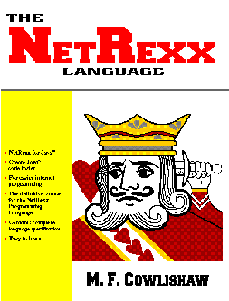

|
The NetRexx Language is now available from
Prentice Hall,
www.amazon.com, or from your local
bookshop. Here are the details for ordering:
About the book... NetRexx is a new human-oriented programming language, designed as an effective and simple alternative to the Java language. With NetRexx, you can create programs and applets for the Java environment faster and more easily than by programming in Java. Using and writing Java classes is especially easy in NetRexx, as the different types of numbers and strings that Java expects are handled automatically by the language. Inspired by two very different programming languages, Rexx and Java, NetRexx blends the easy-to-learn syntax of Rexx with the robustness and portability of the Java environment. The result is a language which is tuned for both scripting and application development, and is therefore truly general-purpose. Mike Cowlishaw, IBM Fellow, wrote his first interpreter while still at school in Bath, England. For over 25 years he has been designing and implementing compilers, interpreters, editors, and productivity tools for both mainframes and personal computers. In this book, Mike both introduces and defines the NetRexx language; these descriptions are complemented by a discussion of the key design principles of the language. The NetRexx home page can be found at: http://www2.hursley.ibm.com/netrexx |
[
IBM home page |
Search |
Contact IBM |
Help |
Terms of use |
Privacy
]
{kind=link}